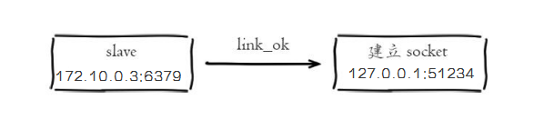

主从配置之后的日志记录也可以看出这个流程。
1）保存主节点（master）信息。
执行 slaveof 后 Redis 会打印日志。
2）从节点（slave）内部通过每秒运行的定时任务维护复制相关逻辑，当定时任务发现存在新的主节点后，会尝试与该节点建立网络连接

从节点与主节点建立网络连接
从节点会建立一个 socket 套接字，从节点建立了一个端口为51234的套接字，专门用于接受主节点发送的复制命令。从节点连接成功后打印日志
如果从节点无法建立连接，定时任务会无限重试直到连接成功或者执行 slaveof no one 取消复制
关于连接失败，可以在从节点执行 info replication 查看 master_link_down_since_seconds 指标，它会记录与主节点连接失败的系统时间。从节点连接主节点失败时也会每秒打印如下日志，方便发现问题：
# Error condition on socket for SYNC: {socket_error_reason}
3）发送 ping 命令。
连接建立成功后从节点发送 ping 请求进行首次通信，ping 请求主要目的如下：
·检测主从之间网络套接字是否可用。
·检测主节点当前是否可接受处理命令。
如果发送 ping 命令后，从节点没有收到主节点的 pong 回复或者超时，比如网络超时或者主节点正在阻塞无法响应命令，从节点会断开复制连接，下次定时任务会发起重连。
从节点发送的 ping 命令成功返回，Redis 打印如下日志，并继续后续复制流程。
4）权限验证。如果主节点设置了 requirepass 参数，则需要密码验证，从节点必须配置 masterauth 参数保证与主节点相同的密码才能通过验证；如果验证失败复制将终止，从节点重新发起复制流程。
5）同步数据集。主从复制连接正常通信后，对于首次建立复制的场景，主节点会把持有的数据全部发送给从节点，这部分操作是耗时最长的步骤。
6）命令持续复制。当主节点把当前的数据同步给从节点后，便完成了复制的建立流程。接下来主节点会持续地把写命令发送给从节点，保证主从数据一致性。